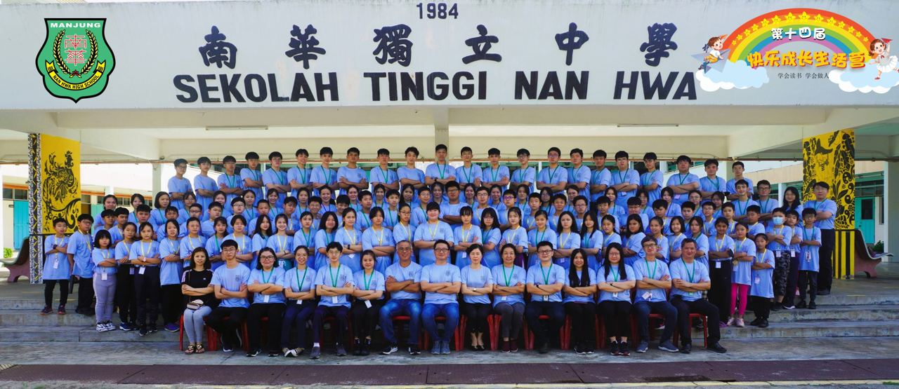
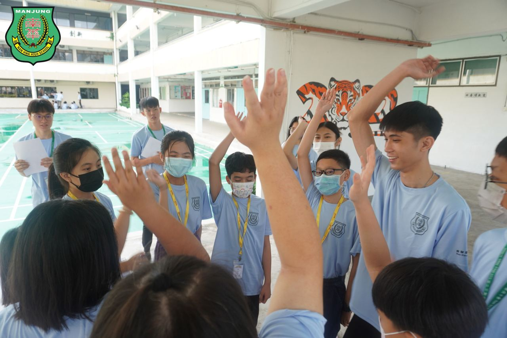
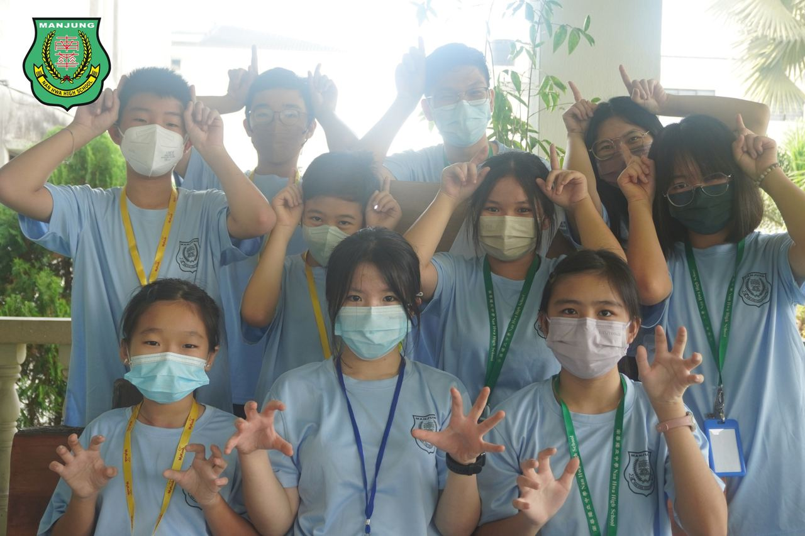
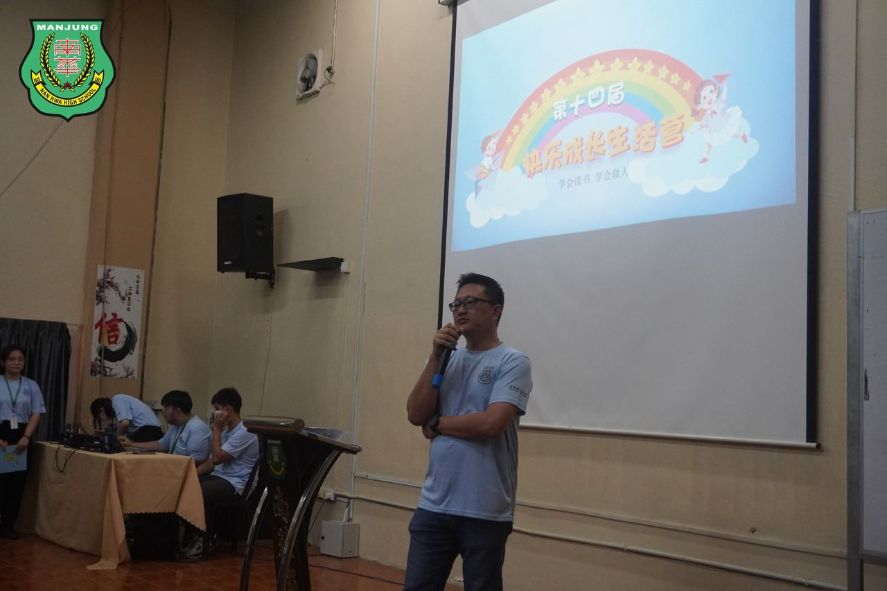
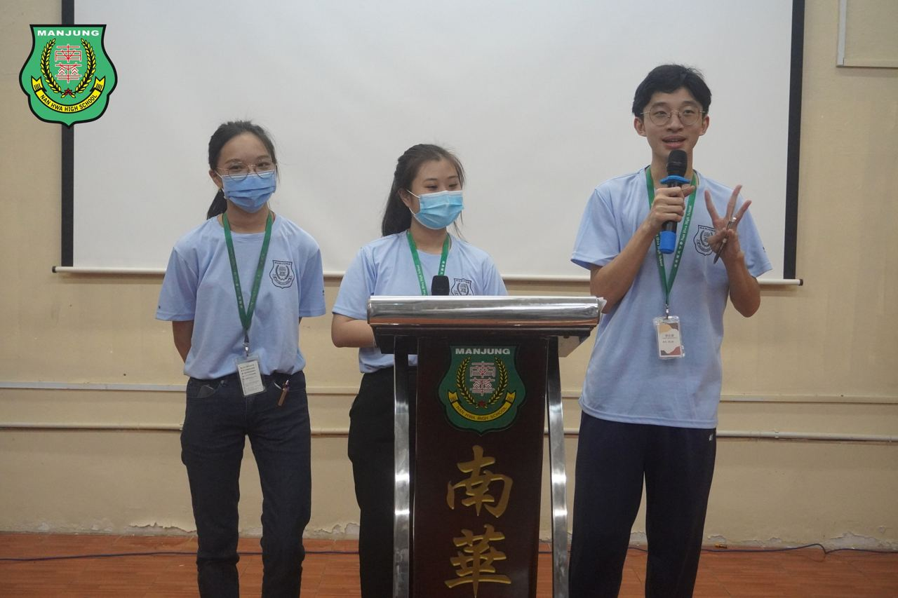
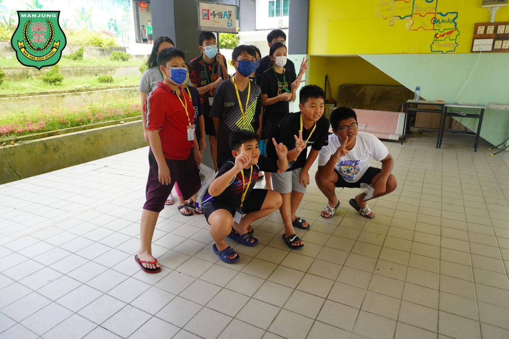
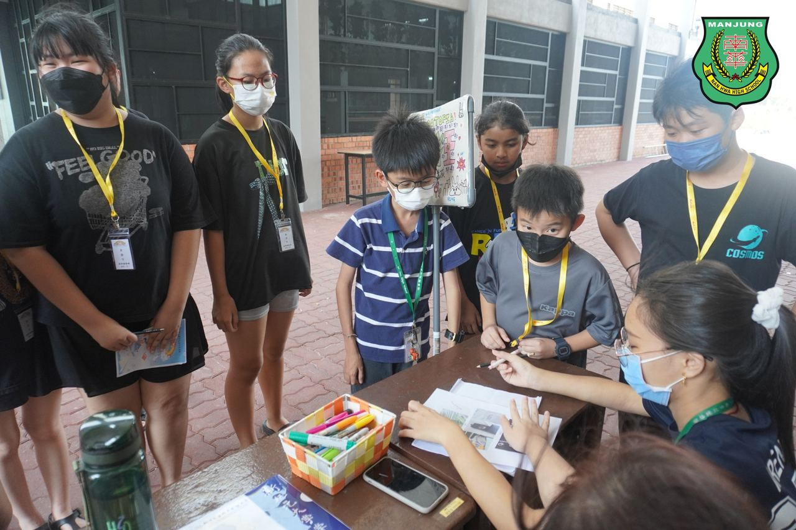
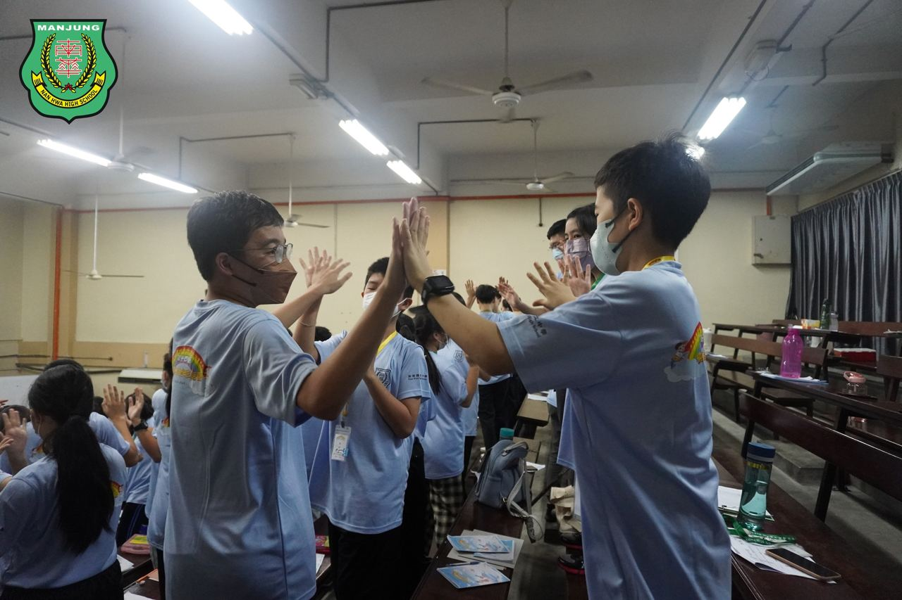

23所学校 63位营员齐聚三天两夜
23所学校 63位营员齐聚三天两夜
第14届快乐成长生活营圆满结束
由曼绒南华独中师生与校友会于二月中联办的“第十四届小六快乐成长生活营”已圆满结束。已停办三年之久的生活营，终于在疫情减缓以后复办，共有来自23所学校、63位营员报名参加为期三天两夜的生活营。
快乐成长生活营的宗旨是培养学生优良的品德，灌输正确的价值观，助学生健康快乐成长。此外也促进学生的联系，扩大生活圈子，培养学生之间友爱及团结的精神。三天两夜的生活营中准备了鼓励学生积极正面、自主探索、动手制作与的成长工作坊、趣味体验课、激励讲座、团康游戏及节目，例如：禅绕画、制作手工肥皂、万花筒、捏面人等。
快乐成长营顾问暨校友会顾问阮忠兴董事在开幕仪式中致辞表示，此营会始终坚守当初创办的宗旨，即传承“心怀感恩”的传统美德，并随着积累每年举办营会的经验逐步深化，将善的种子深耕进学生的内心，用心灌溉，以期长出优良品行的密林。
南华独中校长陈丽冰博士致辞中表示，“快乐”与“成长”是两个单独却又相辅相成，相映成辉的概念。耽溺于快乐未必保障有所成长，或成长过程中未必能够快乐，然而此生活营的便是要向难度挑战，希望两者兼备，让孩子在快乐中学习，在学习中快乐成长。陈校长表示在目睹孩子在三天两夜的生活营中尽情享受，露出快乐且骄傲的笑容，相信必然早已收获满满，有所成长。
#第14届快乐成长生活营
#南华独中 #曼绒 #实兆远







